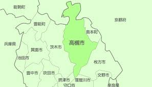

↑JR高槻駅の写真
高槻市とは:

大阪府の北部で、大阪と京都のほぼ中間に位置する高槻市。 抜群の交通利便性に加え、中心市街地には2つの百貨店、おしゃれなカフェや美味しい飲食店などが数多く立ち並んでいる。
高槻市のおすすめの場所
西向きの墳丘の周囲には二重の濠がめぐり、総長約350m、総幅約360mあります。日本最大の家型ハニワや精緻な武人ハニワが発見されています。
西向きの墳丘の周囲には二重の濠がめぐり、総長約350m、総幅約360mあります。日本最大の家型ハニワや精緻な武人ハニワが発見されています。